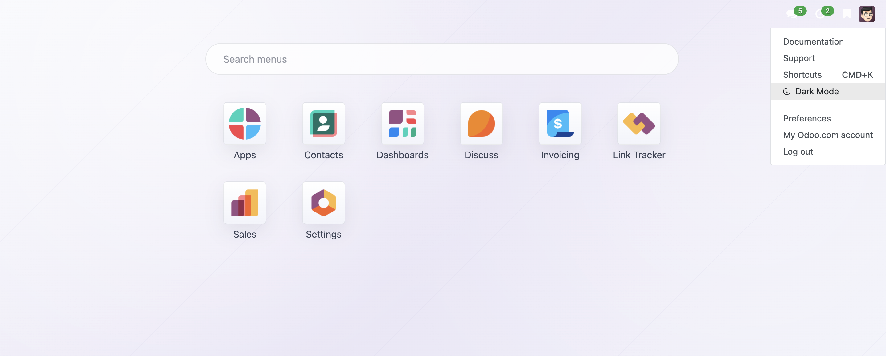
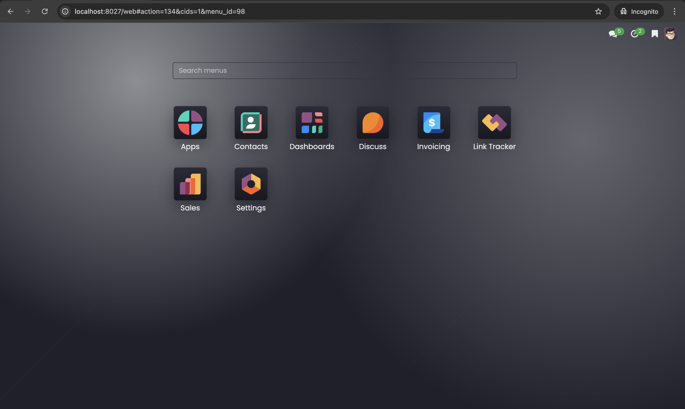
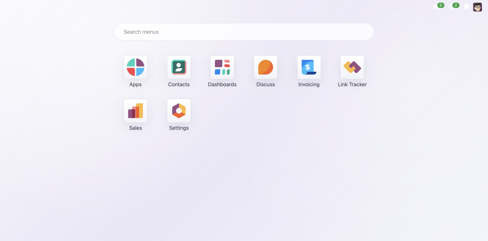
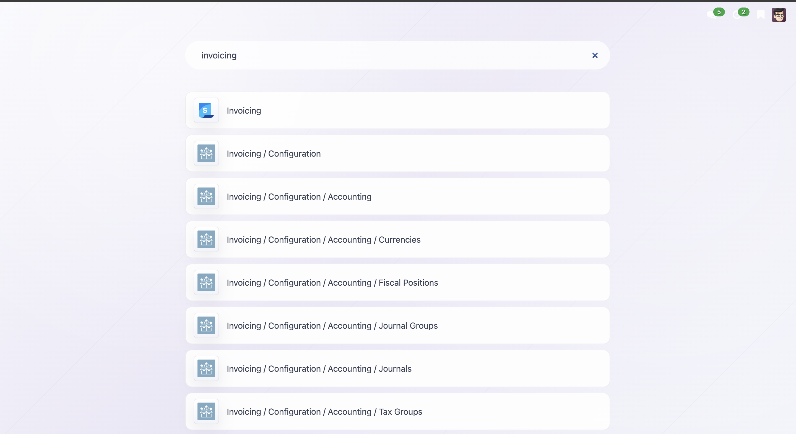
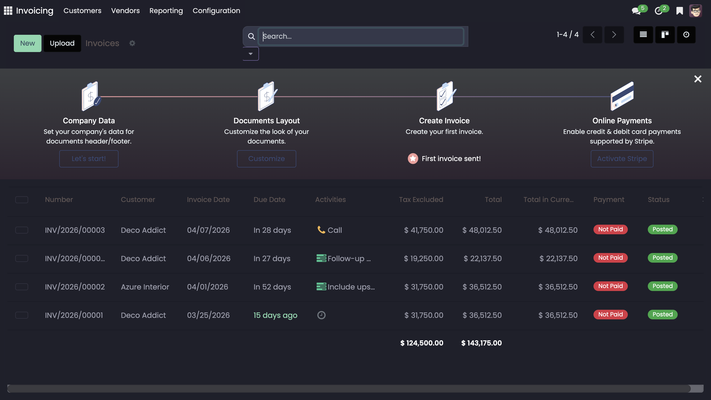

Backend Theme is a clean and professional Odoo backend enhancement module designed to improve the daily user experience. It provides a smarter main menu layout, dark mode support, bookmark shortcuts, and a more organized navigation flow so users can work faster and more comfortably inside the system.
This module focuses on practical backend improvements for users who need a cleaner interface, faster access, and a more modern workspace inside Odoo.
Provides a centralized backend landing area where users can access installed applications more quickly and with better organization.
Adds a comfortable dark mode view for users who work long hours and prefer a more modern visual experience.
Allows users to save important menus or links for faster repeated access during daily operations.
Improves the menu search and visual flow so backend navigation feels simpler, clearer, and more efficient.
Backend Theme is built for teams that want a more polished Odoo backend without changing the familiar business flow. The design keeps the interface easy to understand while giving it a stronger visual structure. This helps administrators, operators, and internal users move through modules more smoothly and stay productive throughout the day.
Below are preview screenshots that show dark mode behavior, menu search usage, and interface improvements.
Quick access placement for changing the backend theme mode.

Preview of the backend screen after switching to dark mode.

Search area layout in the light theme version.

Example of how users can search and open menus more quickly.

Overall preview of the backend appearance in dark mode.
